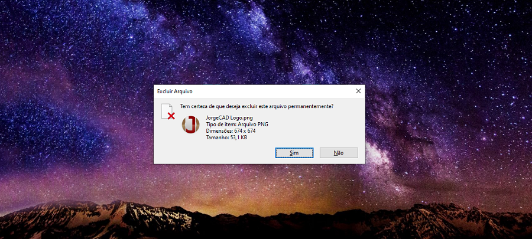

O conceito de Janela

A tradução exata da palavra Windows em português é “janelas” e este termo também é utilizado em várias situações dentro do sistema operacional.
Temos dois tipos de janelas, as janelas de aplicativos, ou programas, e as janelas de pastas, isso sem contar com as caixas de diálogo. As pastas são os locais onde podemos guardar arquivos, e a navegação pelas pastas é feita pelo aplicativo Explorador de Arquivos. A janela principal que dá acesso a tudo num computador é a Área de Trabalho, em casos de utilizarmos o Windows em um Tablet Surface ou mesmo no PC em Modo Tablet, a janela principal será o Menu Iniciar.
No Windows, uma janela é composta de uma área central com as opções do aplicativo, e uma barra horizontal no topo chamada de Barra de Títulos, onde podemos encontrar o título da aplicação em questão, e três ícones, respectivamente: minimizar, centralizar/restaurar e maximizar – utilizados para redimensionar o tamanho das janelas.
Janelas e caixas de diálogo
Como vimos, janelas exibem as opções de um determinado aplicativo. Muitos aplicativos podem abrir, em certo momento, outro tipo de janela que é uma caixa de diálogo. Geralmente menor e com bem menos opções, uma caixa de diálogo costuma ser exibida quando uma informação deve ser emitida ao usuário alertando-o sobre algo que está acontecendo com a aplicação, ou pedindo uma ação do usuário. Por exemplo, ao tentarmos excluir um arquivo ou pasta, uma caixa de diálogo é exibida solicitando confirmação.
Arquivos e pastas
Pastas são locais onde guardamos nossos arquivos e referem-se unicamente aos caminhos onde estes arquivos estão armazenados dentro do Disco Rígido ou da Unidade de Armazenamento, portanto, pastas não ocupam espaço significativo na memória do computador. Enquanto arquivos são as informações que armazenamos, cada arquivo possui seu tipo específico, podemos ter arquivos de texto, de imagem, de áudio e assim por diante. O tamanho, ou espaço que um arquivo pode ocupar em disco, varia de acordo com a quantidade de informação que um arquivo contém.
Unidades de medida
As unidades de medida utilizadas para determinar a quantidade de espaço que um arquivo ocupa são medidas em bytes, os bytes podem armazenar oito dígitos binários, 0 ou 1, chamados de bit, que é a forma como o processador entende as informações. Por exemplo, um arquivo de texto simples, sem formatação com uma letra ‘a’ terá um byte, se este arquivo tiver ‘ab’ terá dois bytes, pois armazena dois caracteres, e cada caractere ocupa um byte. Tendo o byte como ponto de partida usamos uma escala que aumenta de mil em mil assim:
Bit: Um dígito binário.
Byte: 8 bits. Espaço necessário para armazenar um caractere.
Kilo-Byte: Mil bytes.
Mega-Byte: Um milhão de bytes ou mil kilobytes.
Giga-Byte: Um bilhão de bytes ou mil megabytes.
Tera-Byte: Um trilhão de bytes ou mil gigabytes.
Ajuda e Tooltips
O Windows possui um serviço chamado Tooltip que exibe informações sobre praticamente tudo para onde o mouse aponta, de forma que ao paramos a seta do mouse sobre um botão ou link, o nome daquele botão será exibido em uma pequena caixa próxima ao ponteiro.
Caso a informação seja insuficiente, podemos acessar um menu de ajuda sobre o aplicativo que está aberto pressionando a tecla F1 do teclado (no canto superior esquerdo do teclado). A maioria dos aplicativos possuem um menu de ajuda, no entanto alguns requerem conexão com a internet.